NCEI
NCEI Passive Packer Metadata
Disclaimer
Most of the following information can be found in the Passive Packer Manual. This information is summarized from the manual with ADRIFT specific directions for various Passive Packer guidelines and fields. The following steps were put together using Passive Packer v.4.0.2.
Passive Packer Resources
Hard Drive Requirements
Guidelines
Only use Western Digital or Seagate Drives
- We bought 4 20TB WD Elements Desktop Hard Drives for PASCAL, CCES, and ADRIFT
Data can be packaged directly from its home directory to the destination external hard drive
All data and the metadata files created by Passive Packer must fit on the destination drive, ensure there is ample space on drive to reduce the risk of the program crashing
External Hard Drive Name
Include the organization and project name without spaces in the hard drive name
- Example: SWFSC_ADRIFT_DRIVE
Physical Hard Drive Label
Label drive with the following information easily visible
Packagers full name
Your organization
Project Name
Example: Kourtney Burger, SWFSC, ADRIFT
Passive Packer and Tethys
The goal is to automate the Passive Packer process as much as possible. Currently, these guidelines will help with manual data entry.
Future Plan
Try exporting Tethys queries and import data into Passive Packer
Modify Anne’s Tethys deployment spreadsheet script to pull necessary data from deployment details and import it to Passive Packer database. This will auto-fill most fields when Passive Packer is opened, allowing for less manual entry.
Getting Started
Download software from Passive Packer Website and follow the ‘Getting Started’ directions
See Passive Packer Manual for introduction to software and guidelines on packaging other passive acoustics data, including detections and moored deployments
Note: The majority of the information required by Passive Packer can be found in the Deployment Details spreadsheet
Passive Packer Options
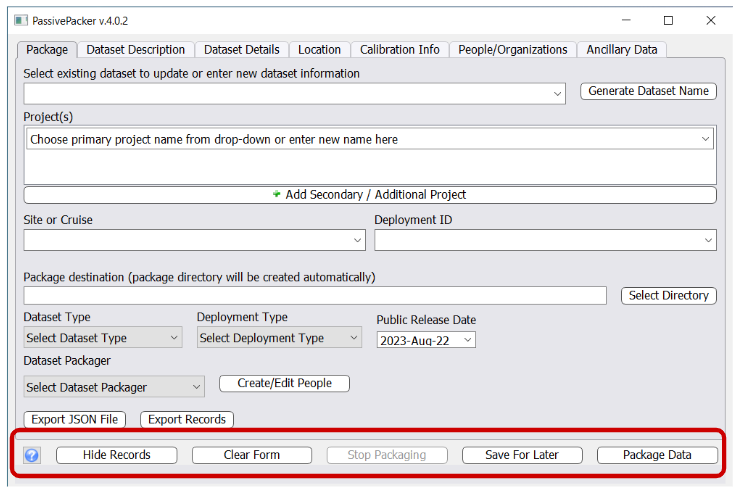
?: Opens Passive Packer Manual
Hide Records: Opens the package record show/hide dialog box. Previous packages records with show selected will be displayed in the Select Existing Record drop down menu
Clear Form: Clears all form fields on all tabs
Stop Packaging: Stops the packaging process at its current point
Save For Later: Saves entered data for later use. Allows the user to continue working on packaging their data at a later date. This button should be routinely clicked to minimize data loss in case Passive Packer crashes
Package Data: Starts the packaging process
Package Tab
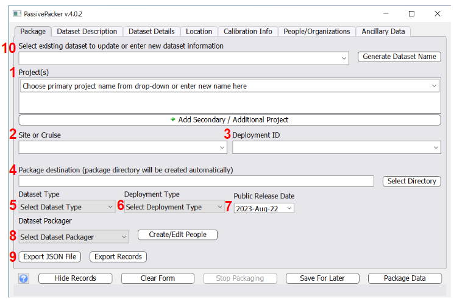
Projects: input or select from drop down ADRIFT, CCES, PASCAL, or other applicable project name
Site or Cruise: input cruise name (drifting deployments do not have set sites)
Deployment ID: Input 3 digit deployment number
Package destination: path to external hard drive
Dataset Type: Audio (unless packaging other types of acoustic data, see manual for directions)
Deployment Type: Mobile Marine
Public Release Date: For SWFSC ADRIFT project, always list at least 1 year after data were collected
Dataset Packager: Your name, use ‘Create/Edit People’ if you are not on the drop down menu
Export JSON File & Export Records: Once all data fields have been filled in, export the file and save it to you metadata folder
Select existing dataset and ‘Generate Dataset Name’: use drop down to select data you saved for later or fill in all above information and click ‘Generate Dataset Name’ to create a new dataset entry
Dataset Description Tab
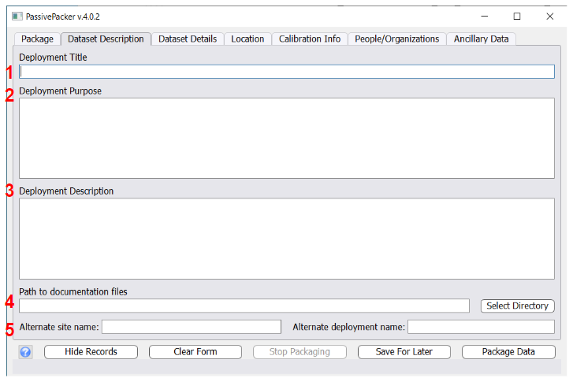
Deployment Title: Full name of project/ dataset
- Example: For CCES write ’California Current Ecosystems Survey - Passive Acoustics Survey
Deployment Purpose: Description of the purpose of the deployment/ dataset. Stays the same for each project, use information from reports for past projects
Deployment Description: Information on why data were collected, details for future data users, and anything special that might affect data usefulness for other analyses. Stays the same for each project, use information from reports for past projects
Path to documentation files: Path to directory with reports or other documentation files. Files can be added after packaging is complete using Update Bag function
Alternate site name and Alternate deployment name: Leave blank for ADRIFT
Dataset Details
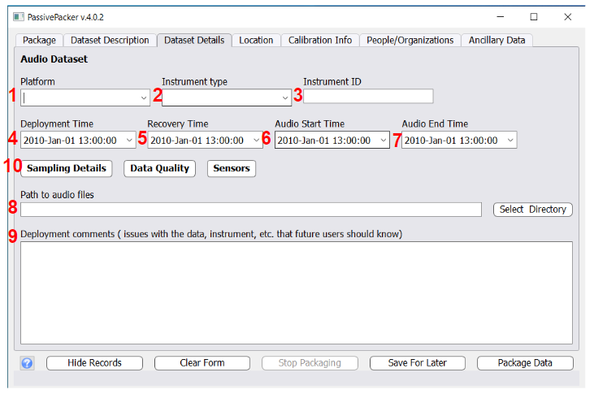
Platform: Drifter
Instrument type: ST4300, ST640, or other instrument
Instrument ID: 4 digit soundtrap ID number
Deployment Time: time of deployment (UTC)
Recovery Time: time of recovery (UTC)
Audio Start Time: start time of first audio file (UTC)
Audio End Time: end time of last audio file(UTC)
Path to audio files: path to wav file directory
Deployment comments: From deployment details, any comments that may be useful to future users and analysis. No quality comments should be included here
Sampling Details, Data Quality, Sensors: See next slides
Sampling Details Tab
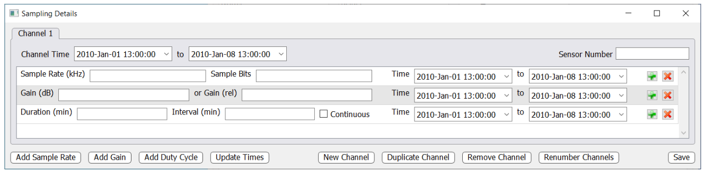
Channel Time & all other time field: Should auto-fill based on ‘Audio Start Time’ and ‘Audio End Time’ in Dataset Details tab. Edit as necessary
Sensor Number: Should match number used in Sensor Details window, change sensor number if duplicating channels
Sample Rate (kHz): sampling rate set in soundtrap deployment window, should be 384 for ADRIFT
Sample Bits: 16 for ADRIFT
Gain (dB) or Gain (rel):
Duration and Interval: Fill in duty cycle information or check continuous box. Note: if set to a continuous cycle (i.e. 6/6) do not check continuous, fill in duration and interval both as 6
Add Sample Rate, Gain, and Duty Cycle as needed. Should only be different if recorder malfunctioned or was set to record with different settings throughout deployment
Use New Channel or Duplicate Channel to add channels as needed. Should have at least 2 for ADRIFT, include bad channels
Data Quality Window
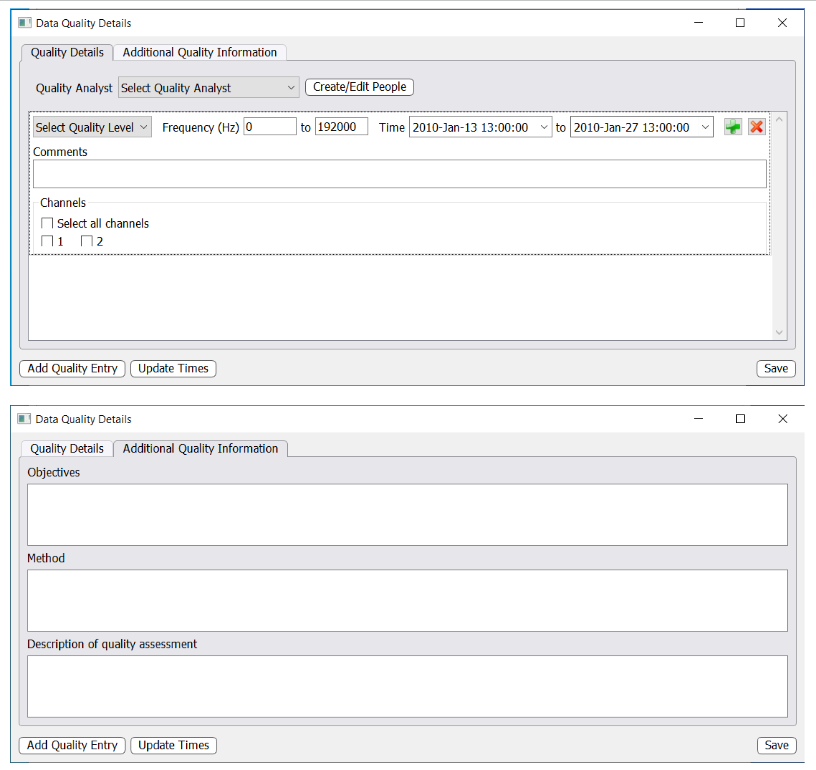
For ADRIFT an overall deployment data quality entry will be added and a detailed noise log will be attached
Quality Analyst: select who determined the data quality, create/edit people as needed
Select Quality Level: select overall deployment data quality from drop down
Frequency Range: input minimum and maximum frequency for that data quality level
Time will auto-fill from Dataset Details tab
Comments: include any comments about data quality here
Channels: for ADRIFT we only analyze channel 1, change as needed
Add quality entries and update times as needed
Additional Quality Information: Fill in objectives, method, and description of quality assessment for future users and analysts
Sensors Window
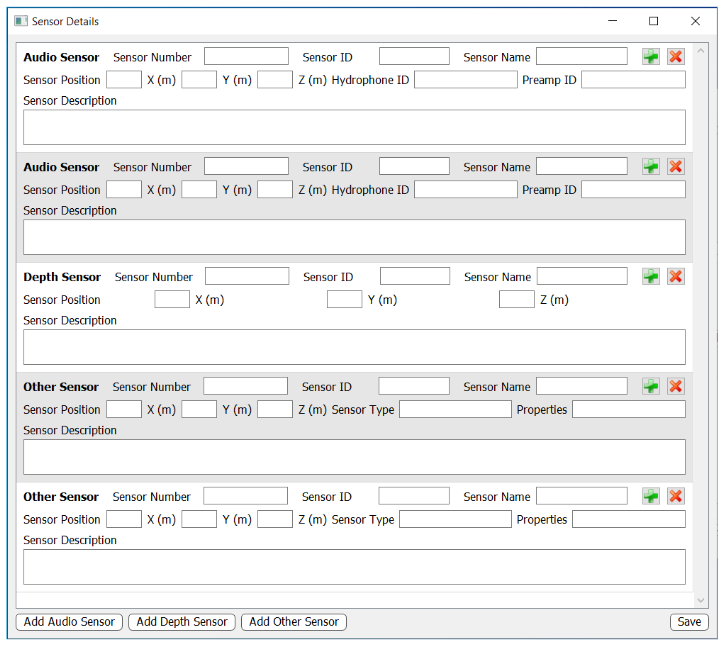
Audio Sensor:
Add new sensor for each channel, 2 CH for ADRIFT
Sensor Number: match sensor number from Sampling Details Window
Sensor ID: Hydrophone Serial Number
Sensor Name: type of hydrophone (HTI-99-HF, HTI-92-WB, or HTI-96-MIN)
Sensor Position: leave X and Y blank, Z for sensor 1 is deployment depth, Z for other sensors is the deployment depth plus the distance between sensor 1 and sensor x (1 is -100, 2 is -105)
Hydrophone ID:
Preamp ID: leave blank for ADRIFT
Sensor Description: Any additional information about hydrophone
Depth Sensor:
Sensor Number: 3 (if 2 audio sensors were added above)
Sensor ID: depth sensor serial number (i.e. U-15771)
Sensor Name: Sensus Ultra
Sensor Position: Deployment depth (-100)
Sensor Description: Any additional information about depth sensor
GPS Sensor:
Add new sensor if 2 GPS units were used (i.e. SPOT)
Sensor Number: 4 (if 2 audio sensors and depth sensor were added)
Sensor ID: GPS ID (7 digit number, 3391082 or 0-4554502)
Sensor Name: GPS name (SO-001 or Spot Letter)
Sensor Position: +1 (above sea level)
Sensor Type: GPS
Properties: Leave blank
Sensor Description: Any additional information about GPS
Add other sensors as needed
Location Tab
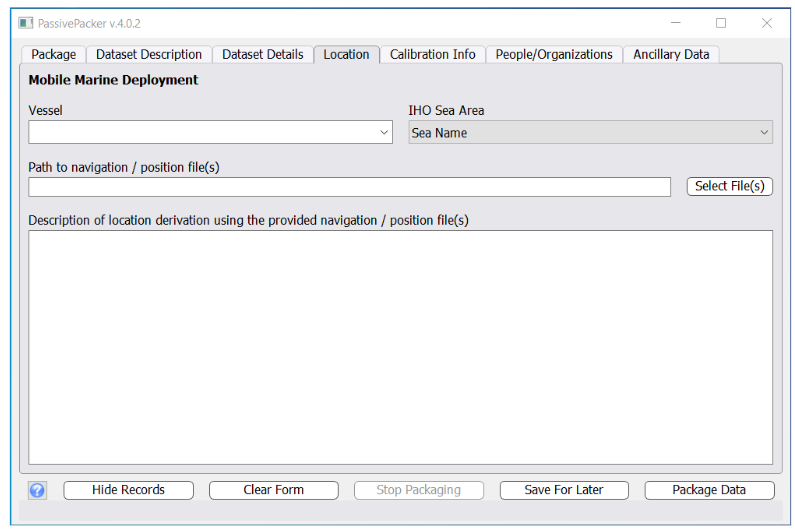
Vessel: Name of deployment vessel
IHO Sea Area: North Pacific Ocean
Path to navigation / position files: select GPS csv
Description of location derivation:
Calibration Info Tab
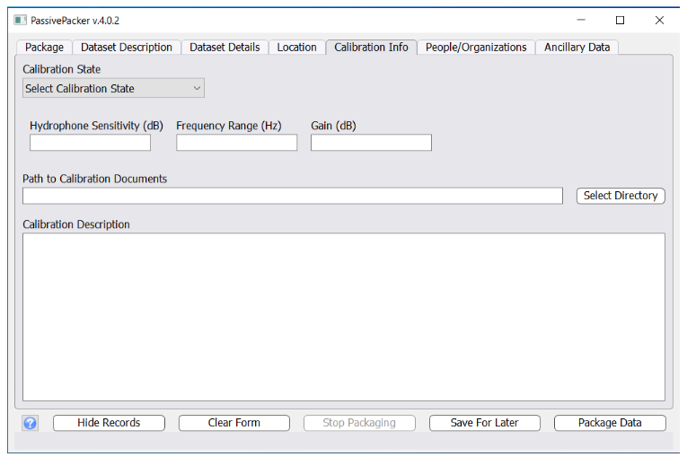
Calibration State:
Hydrophone Sensitivity (dB):
Frequency Range (Hz): (i.e. 20-5000)
Gain (dB):
Path to Calibration Documents:
Calibration Description: Enter calibration methods and any other relevant calibration information
People/Organizations Tab
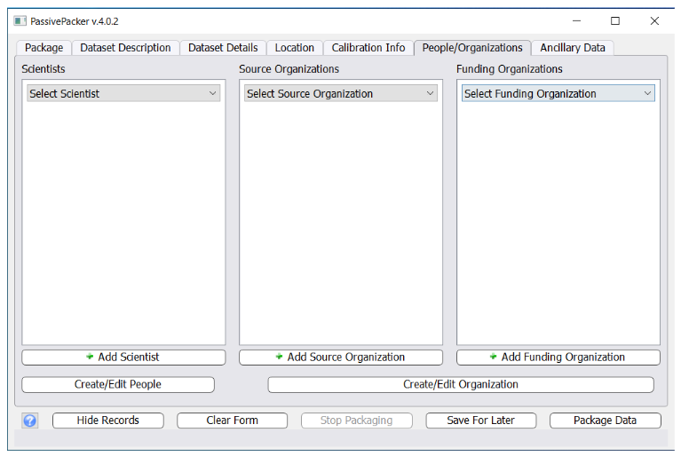
Scientists: List PI and Chief Scientist for each project/deployment (PASCAL - Shannon Rankin & Jennifer McCullough, CCES - Shannon Rankin and Anne Simonis, ADRIFT - Shannon Rankin & Deployment Details Personnel Column)
Source Organizations: SWFSC
Funding Organization: Always list SWFSC, check acknowledgements in past reports, ADRIFT - BOEM
Create/Edit people and organizations as needed
Ancillary Data
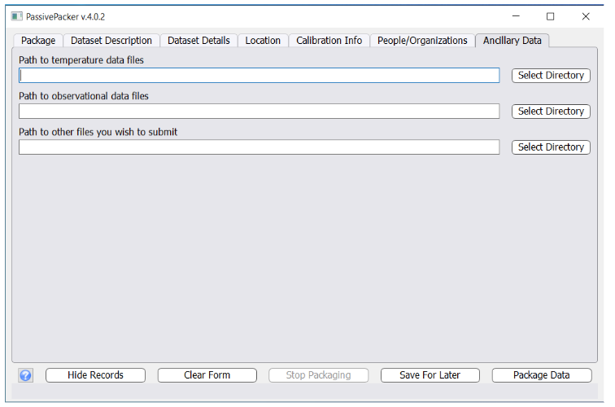
Path to temperature data files: directory with temp files from soundtrap or temperature sensor
Path to observational data files: only include for opportunistic recordings with observation notes (species, behavior, time, etc.)
Path to other files you wish to submit: accelerometer and depth data
Now you are ready to package!
See Passive Packer manual for Additional Information and Warning Message Guidelines
Archive to NCEI
- Archive data and metadata to NCEI